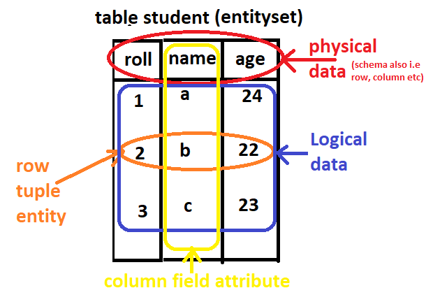

What is SQL?
SQL is the standard language for dealing with Relational Databases. SQL is used to insert, search, update, and delete database records.What is MySQL?
MySQL is a relational database management system MySQL is open-source MySQL is free MySQL is ideal for both small and large applications MySQL is very fast, reliable, scalable, and easy to use MySQL is cross-platform MySQL is compliant with the ANSI SQL standard MySQL was first released in 1995 MySQL is developed, distributed, and supported by Oracle Corporation MySQL is named after co-founder Monty Widenius's daughter: MyWhat is RDBMS?
RDBMS stands for Relational Database Management System. RDBMS is a program used to maintain a relational database. RDBMS is the basis for all modern database systems such as MySQL, Microsoft SQL Server, Oracle, and Microsoft Access. RDBMS uses SQL queries to access the data in the database. MySQL is a relational database management system Command types in SQL
There are four types:- 1. DDL: data definition language. create alter drop truncate 2. DML: data manipulation language. select update insert delete 3. DCL: data control language. grant revoke 4. TCL: transaction control language. commit savepoint rollback